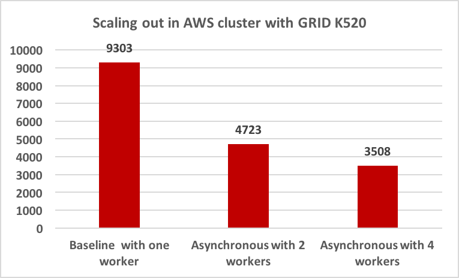

Final Writeup
DistNet - Summary
Distnet displays various techniques used in parallelizing high-accuracy
Convolutional Neural Network using a distributed training algorithm on a cluster of
nodes and a parameter-server architecture leveraging socket communication.
The main goal is to find out which approach is beneficial in which scenario in
achieving similar accuracy as non-distributed training in lesser amount of time.
Background
Neural networks are a set of algorithms, modeled loosely after the human brain, that are designed to recognize patterns. They interpret sensory data through a kind of machine perception, labeling or clustering raw input. The patterns they recognize are numerical, contained in vectors, into which all real-world data, be it images, sound, text or time series, must be translated. Deep neural networks have more than a single hidden layer between the input and the output layer. Training the neural network is done through gradient descent and backpropagation. Deep neural networks with multiple convolution layers and followed by fully connected layers takes a long time to train due to the varying learning rates. To achieve high accuracy, the amount of data fed into these networks is extremely high, making the time for each epoch high. Training AlexNet on a single GPU(NVIDIA K20) takes about 100 epochs (6 days). Long training times for high-accuracy deep neural networks (DNNs) impede research into new DNN architectures and slow the development of high-accuracy DNNs. Hence, we would like to explore the use of a cluster of GPU machines to accelerate the learning. The speed and scalability of distributed algorithms is almost always limited by the overhead of communicating between servers; DNN training is not an exception to this rule. Therefore, the key consideration here is to reduce communication overhead wherever possible, while not degrading the accuracy of the DNN models that we train.
Parallelism Axis
Parallelism in the training deep neural networks can be explored along two axes. Depending on the architecture and communication
model we choose, the parallelism axis will affect the speedup that can be achieved by learning on a cluster as opposed to a single node.
The two kinds of parallelism are :
- Model Parallelism:
In this type of Parallelism different parts of the model that is being learnt in the neural network are computed by different
machines in the distributed system. Model parallelism is efficient when the amount of computation per neuron
activity is high, because neuron activity is the unit being communicated.

- Data Parallelism:
In this type of parallelism each machine in the distributed system has a copy of the entire model but the data
to be trained upon is distributed over the machines and the results are combined from each. Data parallelism is efficient when the
amount of computation per weight is high, because the weight is the unit being communicated.

Approach
| Item |
Description |
| Dataset |
CIFAR-10. We chose this because it can be used for training in a suitable amount of time to get a high accuracy |
| Architecture |
AlexNet |
| Language |
Python |
| Machine Intelligence Library |
TensorFlow |
| Target Machines |
Nodes with atleast a single GPU |
| Message Passing |
Native Socket Communication |
System Architecture Diagram
The image describes the architecture of the system which consists of multiple workers running TensorFlow instances calculating gradient values and sending them to the Parameter Server(s)
Challenges
- Deciding on a reliable and fast communication mechanism. Many of the wrappers around low-level sockets come with overheads and poor reliability(for eg. python bindings for MPI.
Hence, we decided to use the low-level socket API directly, and write explicit functions to safely receive all the intended data
- Due to limitations of time and resources, we are implementing a distributed training algorithm for a relatively smaller data set - CIFAR-10. This allows us to spend sufficient time in
developing the distributed algorithms rather than waiting for the training to complete. The results of these smaller data sets will reflect even more positively
for larger data sets(more machines, more data in working set).
- Our parameter server implementation uses multiple processes, shared memory and queues, as opposed to multi-threading, this is because
a multi-threading pythonic server cannot utilize multiple cores because of the Global Interpreter Lock
- Splitting the tensorflow computation graph without tensorflow knowing about it is a difficult task. Multiple partial runs on the same graph are not fully supported, because of which we had to
ensure that we call compute and apply gradients on two different machines for all our implementations.
Baseline Implementation
We use the CIFAR-10 TensorFlow tutorial code that implements the AlexNet running on a single GPU as our baseline implementation
Axis of Parallelism Used
We have used the Data Parallelism approach as a major axis of parallelism. The CNN datasets generally have large sizes and thus dividing training data among the workers makes it fit in memory and also help to go over data faster. Using multiple workers helps us look at higher aggregate size batches of data at once,
thereby reducing the loss faster, and subsequently reaching the said accuracy faster.
Exploring Design Space in Parallelization
The project explores the various design decisions available in parallelizing the CNN training. Beginning with single Parameter Server, we tried the Synchronous and Asynchronous Stochastic Gradient Descent. In synchronous approach the workers go in sync with each other whereas in asynchronous the workers run iterations on their own speed without waiting for anyone else.
In the asynchronous case we tried the Locked version wherein every read and write of the parameter values at the Parameter Server is protected by a lock. In the lock-free version similar to Project Adam we removed the locked access.
In addition another Lazy Update approach was tested in which the parameter server handling the workers immediately sent the parameter values and a background process lazily applied the gradients received later.
Continuing we also tried multiple parameter server models wherein the parameter values were sharded across two parameter servers.
Results
The results are measured using wall clock time. In all scenarios, the distributed trained model achieves the same accuracy as the baseline. Also, on reducing the baseline training time to the time
taken by its best distributed counterparts, ends up reducing the accuracy as the baseline at any point has looked at much less data than the distributed version.
Experiment Setup 1
To first get the correctness working we started out by running 2 workers on a single GHC machine. This was done because we couldn’t get two GHC machines to communicate with each other due to some security issues. Because of this the GPU compute resources were shared among the 2 workers and the parameter server.
Salient Observations
- The maximum speedup observed is 1.24x. We do not get the expected 2x speedup because of the shared resources.
- There is not much difference in execution times of various parallelism approaches because there are only 2 workers in this experiment
- Also the Lazy Update approach did not affect the results much because the time taken to apply gradients was observed to be very small and not worth postponing.
Experiment Setup 2
Three EC2 instances on AWS out of which two were workers and one was parameter server, each having NVIDIA GRID K520 GPU
Salient Observations
- The maximum speedup observed is 1.97x. This is as expected because now there are dedicated compute resources for each worker and parameter server.
.
- The earlier observations about no prominent differences in execution times of various approaches hold true here as well because of number of workers just being 2.
Experiment Setup 3
Observing the effect on speedup by increasing the number of workers. Tests were conducted on AWS as before using 1, 2 and 4 workers and a single parameter server.

Salient Observations
- With 2 workers there is a speedup of 1.97 whereas it is 2.65 in case of 4 workers compared to 1 worker. This non-linear increase in speedup is due to communication overload and also because of bottleneck at the parameter server
Experiment Setup 4
To explore the effects of various parallelism approaches on scaling out we wanted to test with 4 workers on AWS. But due to shortage of credits ( Surprisingly we lost most AWS credits in network communication among our instances even though we ran for short periods of time) it was not possible there. Thus we moved to GHC and simulated 4 workers and a parameter server there on a single GPU based machine
Salient Observations
- Here the maximum speedup is 1.54x. This is because the compute resources are shared among so many processes.
- Here there is visible difference in the execution times of various parallelism approaches. The approaches perform better in the order of Synchronous, Asynchronous with locks and the best , Asynchronous without locks. The next analysis was done to confirm this.